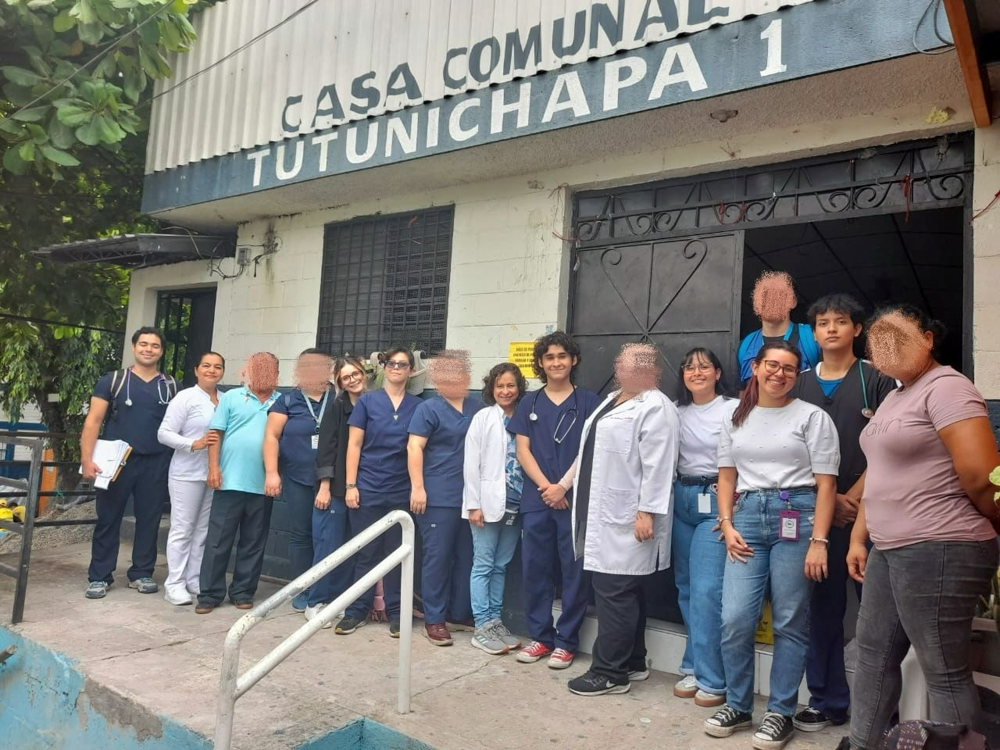
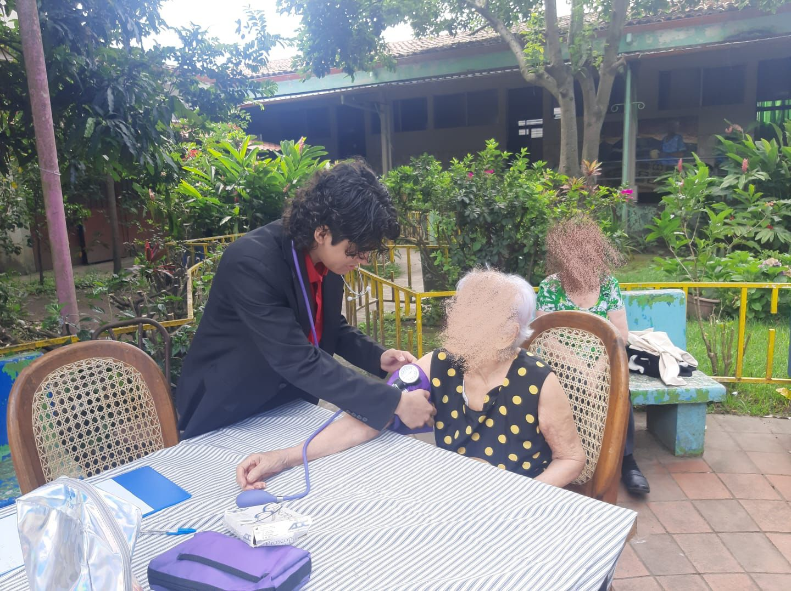
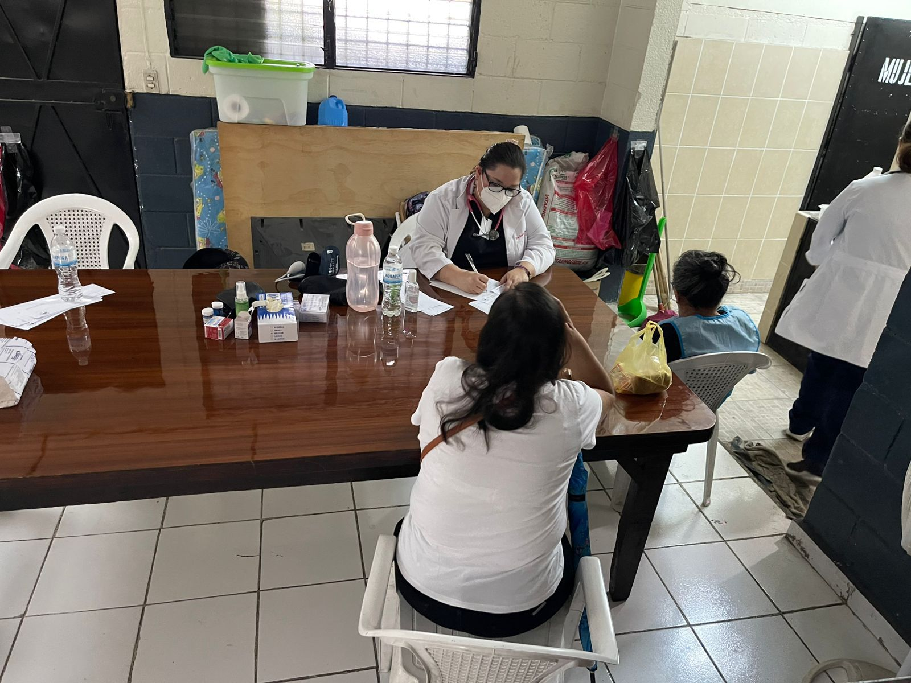
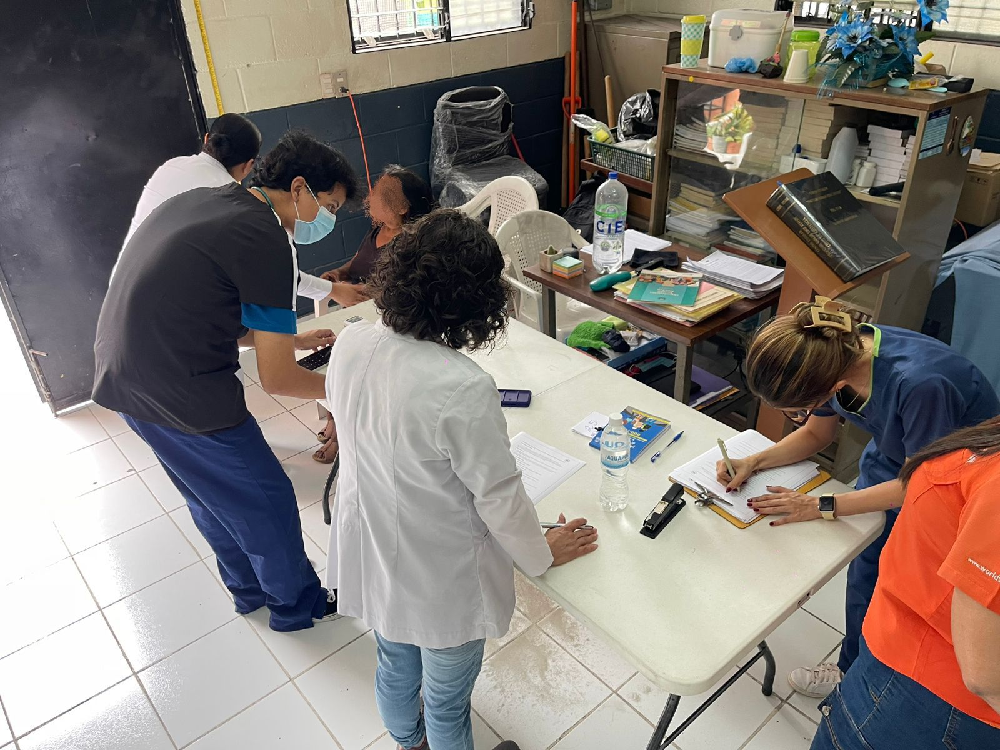

Somos una agrupación conformada por estudiantes y profesionales de la salud comprometidos con servir a quienes más lo necesitan. Trabajamos con empatía, solidaridad y excelencia para construir un mejor mañana para El Salvador.
Llevamos atención médica gratuita, educación en salud y apoyo humanitario a comunidades vulnerables, creyendo firmemente que la salud es un derecho de todos.

Brindar apoyo médico integral a las comunidades más vulnerables, promoviendo la salud y el bienestar como derechos fundamentales. A través de acciones solidarias, educación comunitaria y la provisión de recursos esenciales, buscamos generar un impacto positivo y duradero en la vida de las personas. Nos esforzamos por inspirar a estudiantes de medicina y profesionales de la salud a trabajar unidos para construir un futuro más justo, humano y saludable para todos.
Ser una comunidad unida por el compromiso de transformar la salud y el bienestar de nuestra sociedad. Aspiramos a liderar la promoción de la salud integral con un enfoque que va más allá de la atención médica, abordando las necesidades más urgentes de las comunidades vulnerables. A través de la colaboración, el voluntariado y la educación, buscamos crear un legado de solidaridad y cambio positivo.
El camino que nos trajo hasta aquí.
La Sociedad de Médicos del Mañana fue fundada el 31 de agosto de 2024, fecha que marca no el nacimiento de una idea, sino el inicio de su ejecución. Aunque el concepto existía desde meses atrás, entendimos que las ideas no generan impacto por sí solas. Para nosotros, nacer no es concebir, es actuar. Ese día dimos el paso que transforma la intención en realidad, consolidando nuestro inicio en el trabajo social y comunitario. Desde entonces, dejamos de ser un proyecto en construcción para convertirnos en una agrupación con propósito, identidad y dirección clara. La Sociedad de Médicos del Mañana surge de una convicción firme: El Salvador no solo necesita profesionales de la salud capacitados, sino comprometidos activamente con mejorar el futuro del país. Nuestro nombre refleja precisamente esa responsabilidad: formar y actuar como los médicos que construirán el mañana, desde hoy. Nuestro trabajo se centra en llevar atención médica, educación en salud y apoyo integral a comunidades vulnerables, entendiendo que la medicina no debe limitarse a los hospitales, sino llegar a donde más se necesita. Hoy, más que una idea, somos acción.
Nuestros primeros pasos nos llevaron al lugar que nos vio nacer: el Hogar de Ancianas Nuestra Señora Reina de la Paz. Ahí sostuvimos nuestra primera reunión formal, sentándonos por primera vez como grupo a proponer nuestro trabajo. En ese momento, a pesar de llevar el nombre de Sociedad de Médicos del Mañana, aún no contábamos con un solo médico dentro del equipo. Sin embargo, eso no fue un límite, sino el punto de partida. Con un equipo inicial de seis personas, logramos articular nuestra primera visita, marcando el inicio real de nuestras actividades. Fue ese 31 de agosto de 2024 cuando dejamos de ser intención y nos convertimos en acción. A partir de esa primera intervención, comenzamos a expandir nuestro trabajo hacia otros espacios, incluyendo asilos, orfanatos y comunidades en San Salvador, estableciendo las bases de lo que hoy es nuestro modelo de impacto social.
A partir de nuestra primera intervención, iniciamos un proceso sostenido de crecimiento, consolidándonos como un equipo cada vez más amplio y multidisciplinario. Lo que comenzó con un grupo reducido, hoy se ha convertido en una red de más de 20 profesionales del área de la salud, incluyendo médicos, enfermeros, psicólogos y nutricionistas, unidos por una misma convicción: generar incidencia social real para construir un mejor mañana. En este proceso, hemos tenido la oportunidad de trabajar junto a instituciones que han marcado nuestro desarrollo y fortalecido nuestra forma de actuar. Nuestra primera brigada en conjunto con el Club de Leones nos permitió comprender la estructura y ejecución de jornadas comunitarias. Con Cruz Roja Juventud aprendimos el valor del voluntariado organizado, y junto a ACNUR fortalecimos nuestra capacidad de trabajo eficiente en contextos sociales complejos. Gracias a estas experiencias, logramos estructurar nuestros tres programas principales, a través de los cuales canalizamos nuestro trabajo, garantizando siempre atención y apoyo completamente gratuitos: Actividades Abiertas: Programa enfocado en la atención comunitaria sin un público específico. Incluye brigadas médicas, talleres educativos y charlas de salud en comunidades, acercando servicios esenciales a poblaciones con acceso limitado. Abrazo Intergeneracional: Nuestro primer programa activo. Está orientado a hogares de ancianos y asilos, donde brindamos atención médica gratuita, acompañamiento y apoyo integral a los residentes, priorizando no solo su salud física, sino también su bienestar emocional. Risas que Sanan: Programa dirigido a orfanatos, enfocado en la atención en salud y el acompañamiento a la niñez, combinando intervención médica con actividades que promueven bienestar, desarrollo emocional y espacios de alegría. Reconocemos y agradecemos a estas organizaciones por la confianza depositada en nosotros y por el aprendizaje que nos permitió evolucionar. Este crecimiento no ha sido solo en número, sino en estructura, capacidad y alcance.
La Sociedad de Médicos del Mañana proyecta un crecimiento sostenido tanto en la calidad como en la capacidad de su equipo, fortaleciendo una red de profesionales de la salud cada vez más preparada, comprometida y con impacto real. Nuestro siguiente paso es claro: expandir nuestro alcance territorial. Nos proponemos llevar nuestro modelo de atención a más comunidades a nivel nacional, trascendiendo San Salvador y consolidando presencia en distintas regiones del país en el corto plazo. Buscamos no solo crecer en número, sino elevar nuestros estándares de intervención, optimizando nuestros programas, fortaleciendo alianzas estratégicas y ampliando nuestra capacidad de respuesta en contextos vulnerables. Aspiramos a convertirnos en una agrupación referente en trabajo social en salud, demostrando que la combinación de conocimiento, organización y compromiso puede generar cambios reales y sostenibles. El futuro no es un escenario que esperamos; es uno que estamos construyendo desde ahora.


